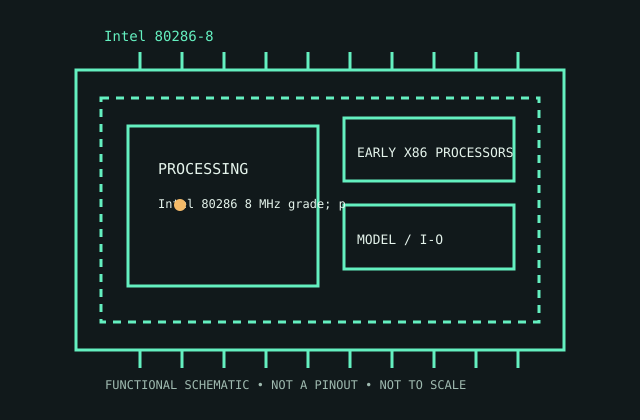

[ EARLY X86 PROCESSORS // IDENTIFIED CPU ]
Intel 80286-8
Intel 80286 8 MHz grade; protected-mode generation introduced 1982. 16-bit data/registers; 24-bit address; real/protected mode; 8 MHz; 68-pin package.

MODEL IDENTIFICATION: Intel 80286-8. Match full model suffix, stepping and package to the physical item and cited documentation.
Recorded specifications
| Cataloged model | Intel 80286-8 |
|---|---|
| Era / family | Intel 80286 8 MHz grade; protected-mode generation introduced 1982. |
| Model specifications | 16-bit data/registers; 24-bit address; real/protected mode; 8 MHz; 68-pin package. |
| Compatibility | 286 board, controller, clock and BIOS; not 386 replacement. |
| Variants / limits | 8 MHz differs from faster 286s; lacks 386 32-bit/virtual-8086. |
Compatibility and variants
- 286 board, controller, clock and BIOS; not 386 replacement.
- 8 MHz differs from faster 286s; lacks 386 32-bit/virtual-8086.
- Check system-vendor CPU support, board revision, firmware minimum, package, memory, cooling and power before installation; similar socket naming does not prove compatibility.
Service and archival notes
Record package, chipset, BIOS and bus timing.
Archive the complete marking/OPN/sSpec, stepping, physical condition, tested host revision, firmware, memory population, cooling, and test conditions. Distinguish published limits from measurements.
Sources & further reading
- Intel ARK model lookup — Intel 80286-8Official Intel model specification search for the cataloged product.
- Intel technical archive — Intel 80286-8 product familyArchived Intel-authored processor data sheets/manuals; match model and revision.
- Intel processor-history reference — Intel 80286-8Historical context for Intel processor generations; use the exact data sheet for limits.
Use the matching manufacturer data sheet revision and platform vendor’s CPU list for final fit decisions.